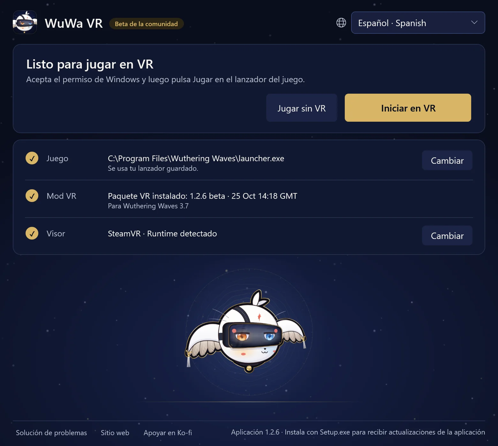

GuíaGuía del jugador de 1.2.6 · Wuthering Waves 3.7 · Windows PCVR
Juega a WuWa en VR
Instala WuWa-VR-Setup.exe y luego abre el acceso directo de WuWa VR. No se necesita una instalación de Python aparte. La primera instalación del paquete VR necesita internet; la pequeña descarga de Setup contiene la aplicación del lanzador.
Instalar e iniciar
El lanzador es una sola pantalla. El titular dice qué toca después; debajo están Iniciar en VR, Jugar sin VR y tres filas: Juego, Mod VR y Visor. Tus elecciones se recuerdan, así que las siguientes veces vas directo a Iniciar en VR.
- Juego muestra la copia de Steam o del lanzador oficial de Kuro que se encontró. Usa Cambiar para elegir otra; en Steam, elige
Wuthering Waves.exe, no el ejecutable Shipping interno. Epic todavía no es compatible. - Mod VR muestra el paquete instalado y la versión del juego para la que está hecho. La primera vez, lee el aviso de riesgo para la cuenta y selecciona Instalar VR. El paquete se verifica antes de instalarse, y la instalación no inicia el juego.
- Visor muestra el runtime de OpenXR en uso, así que inicia primero el software de tu visor. Cambiar abre Usar visor y Usar simulador incluido, una vista previa en el escritorio. Cambiar puede pedir permiso de Windows y necesita el juego y su inyector cerrados; abrir, instalar o actualizar el lanzador nunca lo cambia por sí solo.
Aplicación del lanzador es esta ventana de escritorio. Paquete VR es el mod y sus herramientas. Actualizar uno no actualiza el otro automáticamente.


Selecciona Iniciar en VR. Se iluminan cuatro pasos a medida que avanza: Permiso (elige Sí en el aviso de Windows), Pulsa Jugar (en el lanzador de Kuro; Steam inicia el juego por sí solo), Iniciando VR (normalmente menos de un minuto) y En VR.
En VR, el lanzador dice Puedes cerrar esta ventana. La VR sigue funcionando. Si iniciar la VR tarda más de lo normal, lo indica y muestra los detalles. Dejar de esperar cancela la espera sin cerrar el juego.
Jugar sin VR inicia la misma copia del juego de forma normal, sin el mod.
Controles del día a día
Xbox / XInput es la forma habitual de jugar. L3 / R3 significan pulsar el stick izquierdo / derecho. ¿Dudas? Mantén L3, o LT + RT, medio segundo: aparece una tarjeta bajo tu vista que muestra qué hace cada botón y lo ilumina al pulsarlo. Suelta los controles entre atajos. Las tablas de abajo muestran todos los atajos, agrupados como las tarjetas.

- LTVentana del portal
- LBModo HUD / ratón
- ViewPrimera persona
- Cruceta ↓Primera persona: animación completa
- RTDiorama (10×)
- RBCámara normal / fija
- MenuMantener esta tarjeta abierta
- Y/XCámara arriba / abajo
- BMostrar / ocultar interfaz
- ARecentrar vista
- R3Menú de WuWa VR
Gestos
- R3×2Cámara libre
- L3×2Captura de pantalla
- LT+RT→R3Clic: VR completo / pantalla estéreo
- LT+RT→R30.8 sMantén: cine mono sí / no
- LT+RT→L3Clic: desenfoque sí / no
- LT+RT→YPulsa: ocultar personajes junto a tus ojos
chronohaxx.github.io/wuwa-vr
El soporte de PlayStation es experimental.
Todos los atajos
MANTÉN L3
| L3+LT | Ventana del portal |
|---|---|
| L3+LB | Modo HUD / ratón |
| L3+View | Primera persona |
| L3+cruceta abajo | Primera persona: animación completa |
| L3+RT | Diorama (10×) |
| L3+RB | Cámara normal / fija |
| L3+Menu | Mantener esta tarjeta abierta |
| L3+Y/X | Cámara arriba / abajo |
| L3+Y/X | Cámara de historia: acercar / retroceder |
| L3+Y+X | Y + X a la vez: valor predeterminado |
| L3+B | Mostrar / ocultar interfaz |
| L3+A | Recentrar vista |
| L3+R3 | Menú de WuWa VR |
| R3×2 | Cámara libre |
| L3×2 | Captura de pantalla |
MANTÉN LT + RT
| LT+RT→R3 | Clic: VR completo / pantalla estéreo |
|---|---|
| LT+RT→R30.8 s | Mantén: cine mono sí / no |
| LT+RT→L3 | Clic: desenfoque sí / no |
| LT+RT→L30.8 s | Pantalla estéreo sí / no (mantén 0,8 s) |
| LT+RT→Y | Pulsa: ocultar personajes junto a tus ojos |
CÁMARAS
| LB+LT/RT | Fija: alejar / acercar |
|---|---|
| Mantén RB | Velocidad máxima con Polar walk activo |
| Con la cámara libre activa R3×2 | |
| Stick izquierdo / derecho | Cámara libre: mover / mirar |
| LT/LB | Cámara libre: subir / bajar |
| RT / doble RT | Cámara libre: impulso / turbo |
MENÚS E HUD
| LB+R3 | V una vez; mantén 0,8 s para la rueda Tab |
|---|---|
| Con el modo HUD / ratón activo L3+LB | |
| Stick izquierdo | Mover cursor |
| A/B | Clic / volver |
| X+stick izquierdo | Desplazar |
| Cruceta | Mover mapa |
| LT/RT | HUD más cerca / lejos |
| LB/RB | HUD abajo / arriba |
MENÚ WUWA VR
| L3+R3 | Abrir / cerrar el menú de WuWa VR |
|---|---|
| Con el menú de WuWa VR abierto L3+R3 | |
| Cruceta / A / B | Navegar / activar / volver |
| LB/RB | Cambiar página |
| Y | Mover menú |
TECLADO Y RATÓN
| Tecla VR | Mantén la tecla a la izquierda del 1 y pulsa una tecla |
|---|---|
| Tecla VR+1 | VR completo / pantalla estéreo |
| Tecla VR+2 | Cine mono |
| Tecla VR+3 | Ventana del portal |
| Tecla VR+4 | Diorama (10×) |
| Tecla VR+B | Desenfoque (profundidad de campo) |
| Tecla VR+N | Ocultar personajes junto a tus ojos |
| Tecla VR+H | Mostrar / ocultar interfaz |
| Tecla VR+R | Recentrar vista |
| Tecla VR+P | Captura de pantalla |
| Tecla VR+F | Primera persona |
| Tecla VR+T | Cámara normal / fija |
| Tecla VR+C | Cámara libre |
| Tecla VR+G | Primera persona: animación completa |
| Tecla VR+E/Q | Cámara arriba / abajo |
| Tecla VR+E+Q | E + Q a la vez: valor predeterminado |
| Tecla VR+Rueda | Cámara fija más cerca / lejos |
| Tecla VR+M | Modo HUD / ratón |
| Tecla VR+K | Mantener esta tarjeta abierta |
| Insert | Abrir / cerrar el menú de WuWa VR |
| Con la cámara libre activa Tecla VR+C | |
| WASD/Ratón | Cámara libre: mover / mirar |
| Espacio/Ctrl | Cámara libre: subir / bajar |
| Mayús/Mayús×2 | Cámara libre: impulso / turbo |
Teclado y ratón: Insert abre o cierra el menú. En VR completo, una flecha muestra dónde está el ratón en los menús del juego; se oculta al usar el mando. Mientras el juego está en primer plano, el ratón se queda dentro de su ventana; Mantener el ratón en la ventana del juego, en la página Confort del menú, lo desactiva.
PS4 / PS5: Steam Input u otra asignación funcional de Xbox / XInput usa los mismos atajos. Cruz / Círculo / Cuadrado / Triángulo son A / B / X / Y, L1 / R1 son LB / RB, L2 / R2 son LT / RT, Compartir / Crear es View y Opciones es Menu. La entrada directa experimental de DualShock 4 y DualSense también funciona cuando no hay ningún mando XInput activo, pero el juego puede reaccionar a los mismos botones. Consulta la referencia completa.
La página View del menú de WuWa VR tiene las opciones de vista, desenfoque y primer plano. Pantalla cinemática automática está activada: los vídeos de la historia pasan al teatro mono y las imágenes de la historia a la pantalla estéreo, y luego vuelve tu vista; las conversaciones mantienen la vista que elegiste. El atajo de vista funciona siempre.
Caminar opcional con mandos de VR, diorama y demo de manos
Los Mandos de VR (páginas Inicio y Controles) permiten usar los mandos de Quest como un mando de Xbox para caminar y explorar. Empiezan desactivados en cada inicio. Mantén el botón Menu izquierdo 1 segundo para activarlos o desactivarlos (una vibración lo confirma); una pulsación corta sigue siendo Start. Sin botón Menu (Index), mantén pulsados ambos sticks 1 segundo mientras están desactivados. Con mandos de VR, las tarjetas nombran los gatillos, empuñaduras y sticks.
Compartir con Xbox / cinta de correr se recuerda: Ambos juntos (por defecto; caminar en la cinta sigue funcionando), Gana el último usado o Solo VR. La Ranura del mando es Automático por defecto: usa la ranura que tiene un mando, como el mando virtual de Reality Runner. Ambos están en la página Controles del menú WuWa VR, junto con Carrera en cinta: con Reality Runner abierto, caminar inicia una carrera que te cronometra y guarda tu ruta en el juego. Consulta la referencia para caminar.
El diorama necesita Native Stereo y amplía el movimiento de la cabeza con la escala del mundo; al desactivarlo vuelve tu escala normal. Escala del diorama, en la página Cámara, fija su tamaño (de 2× a 10×). La demo de manos / dedos es solo visual, sin agarrar ni gestos.
Actualizaciones y reversión
Cuando hay una versión nueva de la aplicación, el lanzador te la ofrece: actualiza y reinícialo cuando no haya nada en marcha. Si la aplicación se inicia con el juego cerrado, instala por sí sola un paquete de VR más nuevo para la misma versión del juego; el paquete que tenías sigue instalado. Solución de problemas → Más opciones muestra las versiones instaladas y publicadas y tiene Buscar actualizaciones. Que falle la búsqueda de actualizaciones o haya una lista en caché no significa que tu paquete esté al día.
Esta versión combina la aplicación 1.2.6 con el paquete beta-1-2-6, para WuWa 3.7. Para deshacer una actualización del paquete de VR, cierra el juego y usa Usar la versión instalada anterior en Solución de problemas → Más opciones. Esto no revierte la aplicación del lanzador. Los ajustes, las copias de seguridad y las grabaciones se conservan.
Si la actualización de la aplicación está bloqueada, usa el Setup más reciente del sitio web. Reinstalar no detiene un proceso en segundo plano atascado; usa primero los pasos de recuperación de abajo.
Alternativa portátil
Descarga WuWa-VR-Launcher.zip desde la versión correspondiente, extrae todo y abre WuWa VR Launcher.exe. Mantén sus carpetas juntas. Esto abre la interfaz separada de herramientas web; no actualiza la aplicación de escritorio instalada.
Si algo va mal
Abre Solución de problemas en la parte inferior del lanzador y prueba sus arreglos de arriba abajo. Reparar archivos del mod vuelve a instalar los archivos del mod desde una copia verificada y conserva tus ajustes. Restablecer ajustes del mod devuelve los ajustes del mod a como venían, después de guardar una copia de los tuyos. Guardar un informe del problema reúne tus registros y ajustes en un zip en el escritorio, sin tu nombre de usuario de Windows: envíalo cuando pidas ayuda.
Más opciones tiene el resto: Comprobación del mando, Comprobar si está listo, Copiar diagnóstico, Abrir la carpeta de ajustes, las versiones instaladas, Procesos del lanzador atascados y Preparar desinstalación.
- El inicio se atasca: usa Dejar de esperar y espera hasta cuatro segundos. Si el lanzador no puede confirmar que el inicio se detuvo, ofrece Procesos del lanzador atascados: elige Buscar procesos del lanzador atascados, selecciona solo el proceso que quieres detener y confirma Detener seleccionados. No hay nada preseleccionado. Después elige Reintentar conexión.
- No se puede cerrar: Cerrar solo el lanzador cierra la ventana y deja intacto el trabajo en segundo plano. La recuperación nunca detiene WuWa, Steam, el inyector ni un runtime de VR.
- Falta el mando: Comprobación del mando lee las ranuras de XInput y la información de HidHide sin cambiar los ajustes. Que una ranura esté conectada no demuestra que el juego reciba los botones.
- El HUD o los menús se ven mal: la página Interfaz del menú de WuWa VR tiene Actualizar diseño del HUD; abrir y cerrar ESC también recoloca el HUD. El HUD y los menús usan el diseño 16:9 del juego plano; Diseño de interfaz 16:9, en la misma página, cambia al diseño antiguo, más alto. L3 + B vuelve a mostrar la interfaz del juego oculta.
- No aparece el menú: Ctrl+Shift+Home abre el menú de WuWa VR y Ctrl+Shift+End la ventana clásica de UEVR, sea cual sea la configuración del menú.
- Informar de un problema: en la página Grabar del menú de WuWa VR, elige qué falló y selecciona Guardar informe; en el lanzador usa Guardar un informe del problema. Incluye las versiones de la aplicación y del paquete de VR, lo que ocurrió y una grabación si tienes una, y adjúntalo a un issue.
Eliminar las versiones descargadas o desinstalar
Solución de problemas → Más opciones → Preparar desinstalación devuelve primero tus ajustes de UEVR a como estaban antes del mod (los del mod se guardan antes) y luego elimina las descargas verificadas cuando lo confirmes y no haya nada en marcha. Después desinstala la aplicación en Configuración de Windows → Aplicaciones. El juego, las copias de seguridad, las grabaciones, el paquete de OpenXR activo y los archivos en uso o sin verificar se conservan. Volver a instalar no detiene un proceso de segundo plano atascado.
Grabación y límites actuales
Inicia y detén la grabación desde el menú de WuWa VR (Grabar vídeo) o desde Herramientas para desarrolladores en Solución de problemas → Más opciones. La grabación funciona con SteamVR y el simulador incluido, no con VDXR; con SteamVR también puede grabar el sonido del juego y un micrófono. Los ID de jugador se cubren mientras graba. Revisa los vídeos por nombres y datos de la cuenta antes de compartirlos. Consulta la guía de comentarios.
Lo que se probó en esta versión y los límites conocidos están en las notas de la versión. Entre los problemas conocidos: los marcadores de misión quedan un poco por debajo de su objetivo en VR completo, iconos más planos en la pantalla de personaje (usa el diseño alto para que su reflejo del suelo siga en vivo), fondos de menús planos que se mueven y pausas largas en escenas o diálogos. El teatro mono ayuda con algunos menús y cinemáticas.